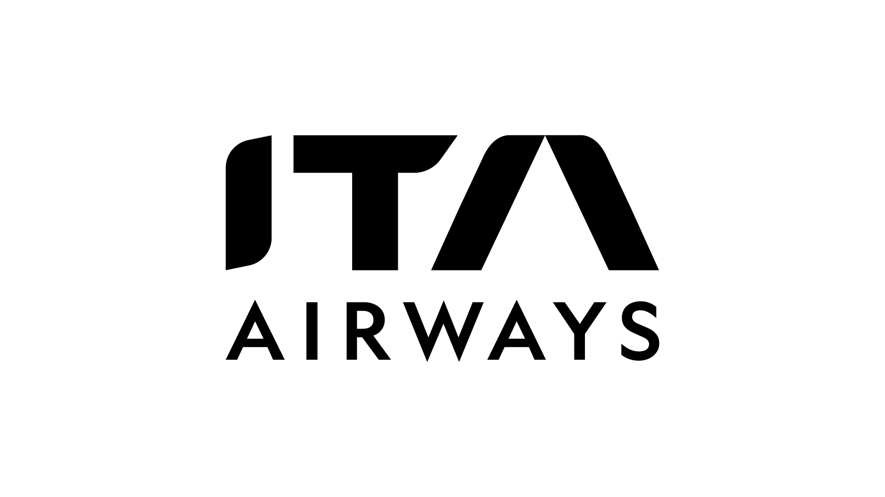
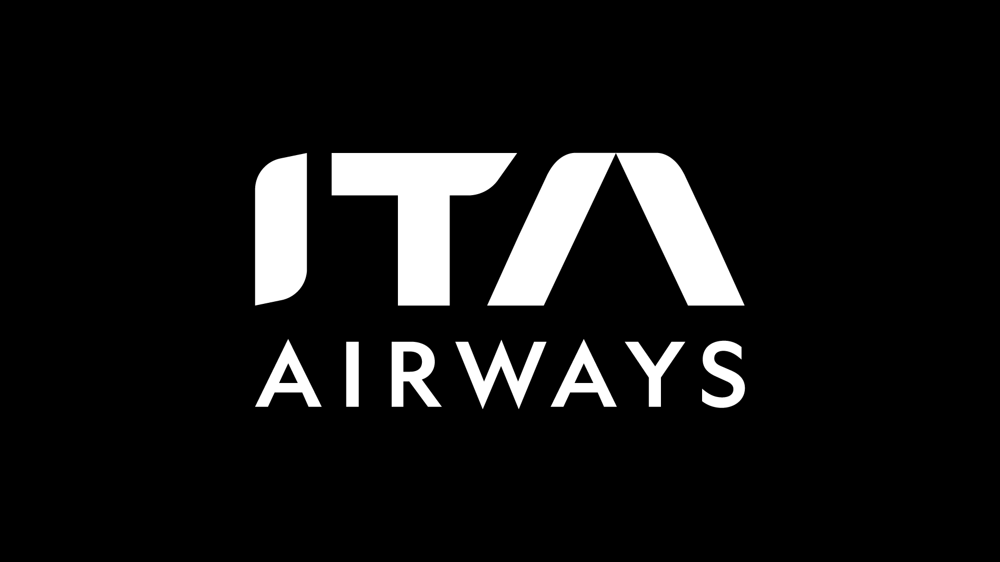
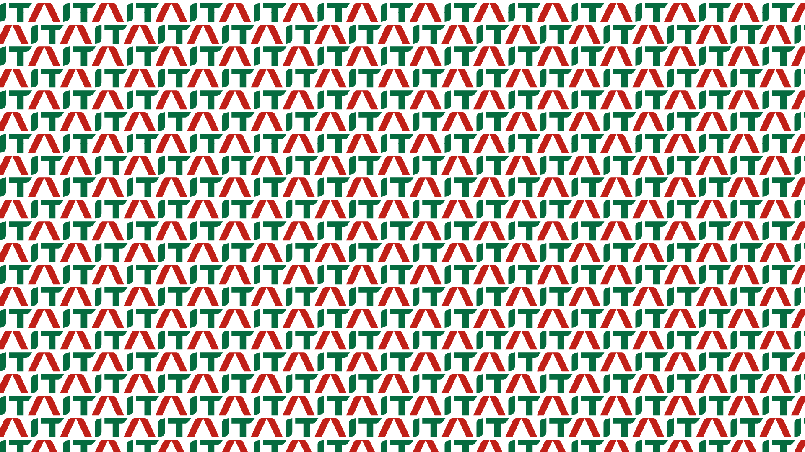
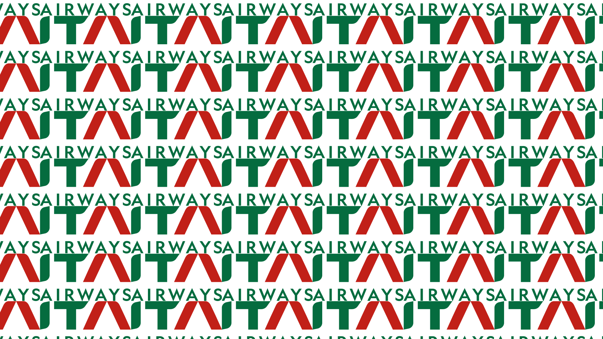

Soft restyling ITA Airways - NABA - 2026
Brief
Il progetto ha richiesto l'intervento di restyling su un marchio esistente, applicando la metodologia di indagine sviluppata durante il corso di Basic e Logo Design. L'obiettivo era ridefinire il logo prescelto scegliendo tra un approccio conservativo (soft), per mantenerne la riconoscibilità originaria, oppure un approccio radicale (hard), stravolgendolo per affiancarlo a nuovi valori e significati semiotici.
Richieste Progettuali
L'esame ha richiesto una metodologia strutturata e l'impostazione di tavole in formato A4 orizzontale, comprendenti:
- Fase di Ricerca: Sviluppo del concept tramite brainstorming, mappe mentali e definizione dei valori fondanti del brand.
- Fase Progettuale: Creazione di un moodboard visivo, elaborazione di studi manuali e prime ipotesi cartacee delle proposte di restyling.
- Fase Esecutiva: Definizione del marchio finale attraverso l'applicazione rigorosa di una griglia costruttiva e l'identificazione della palette cromatica.
Approccio Progettuale
Per questo lavoro ho scelto di concentrarmi sul marchio di ITA Airways, optando deliberatamente per un soft restyling. L'intervento è stato di carattere stilistico e conservativo: ho lavorato sulla pulizia delle linee, l'equilibrio dei pesi e l'ottimizzazione delle proporzioni tramite la griglia costruttiva. Questo ha permesso al logo di modernizzarsi e acquisire maggiore solidità, pur rimanendo immediatamente riconoscibile e fedele alla sua identità originaria.
Extra



